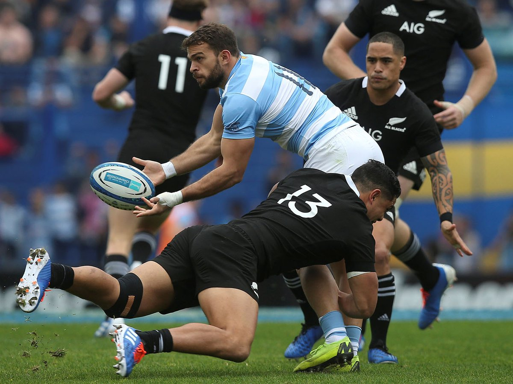

R U G B Y
Deporte que se practica entre dos equipos de quince jugadores que tratan de llevar un balón ovalado más allá de una línea de meta del equipo contrario o de pasarlo por la portería; para jugar con el balón se utilizan las manos y los pies y para impedir el ataque se puede cargar y derribar al jugador que lleva el balón; vence el equipo que consigue más puntos en los 80 minutos que dura el encuentro, dividido en dos partes iguales.
Los equipos de rugby están formados por 15 jugadores. El dorsal que lleva cada jugador determina su posición el campo. Los jugadores del 1 al 8 se denominan forwards (delanteros) y forman el pack (jugadores que se meten en la melé). Los jugadores del 9 al 15 se denominan backs (línea de tres cuartos), tambien la Pelota: De forma ovalada, es de cuero o material sintético parecido y sus dueños
